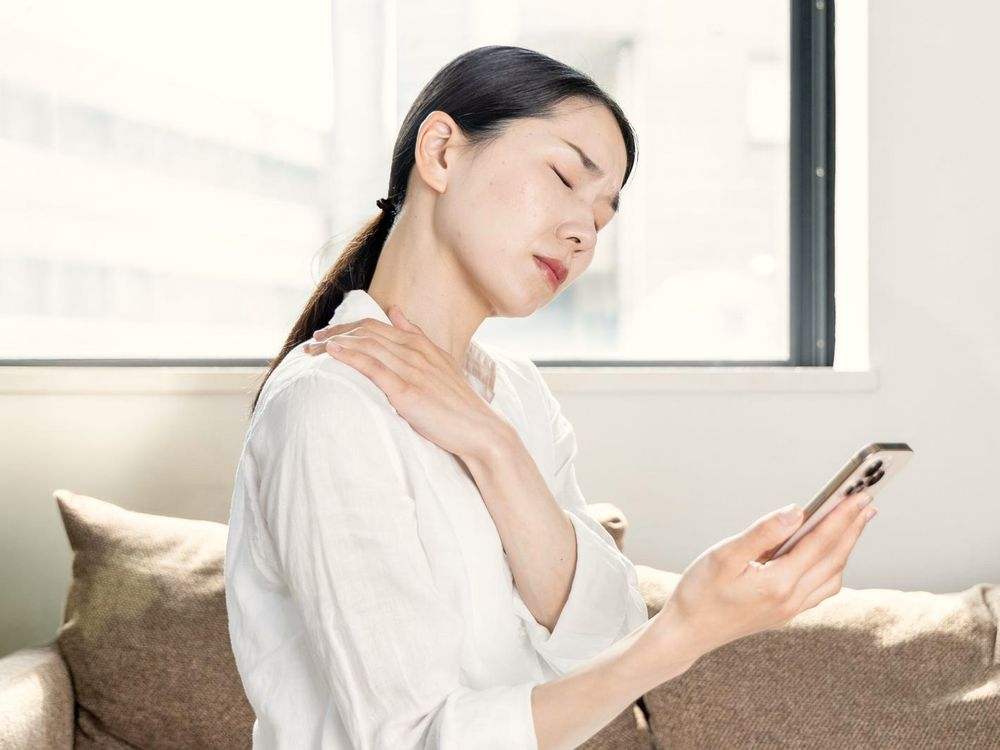
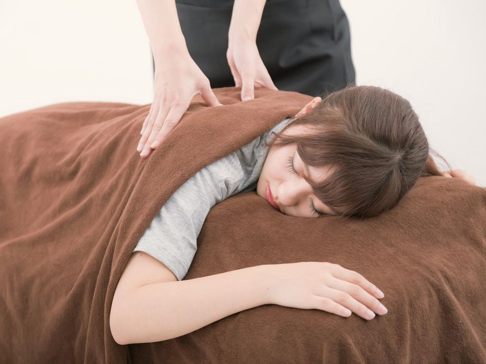
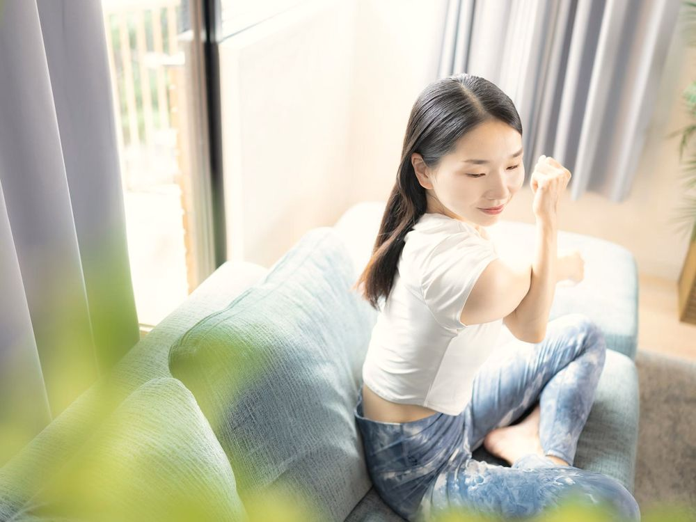

- トップ
- お悩み別のご案内
お悩み別のご案内
よくご相談いただく5つのお悩みについて、ほどくでの見かたと施術、おうちでできることをまとめました。
肩こり・首のつらさ

こんな方が来られています
- 夕方になると、肩に重いものがのっているよう
- スマホやパソコンのあと、首を回すと痛い
- マッサージに行っても、次の日には戻ってしまう
ほどくでの見かた
肩そのものより、肩甲骨の動きと呼吸の浅さを見ます。画面をのぞきこむ姿勢が続くと、胸の前が縮んで、背中側の筋肉がずっと引っぱられた状態になるためです。
施術
胸の前と肩甲骨のまわりを、手のひらでゆっくりゆるめます。首は最後に、そっと。首を強くもむことはしません。
1時間に1回、両手を後ろで組んで、胸を開いたまま3回深呼吸。30秒で終わります。
腰痛

こんな方が来られています
- 座りっぱなしのあと、立ち上がるときに腰が伸びない
- 朝、顔を洗うために前かがみになるのがつらい
- 重いものを持ったわけではないのに、腰が張る
ほどくでの見かた
腰をかばって、お尻と太ももの裏が固くなっていることが多くあります。座るときの骨盤の傾きと、足首のかたさも確かめます。
施術
お尻・太ももの裏・わき腹から順に ほどき、腰には最後に手をあてます。痛みが強い日は、横向きのまま楽な姿勢で受けていただけます。
いすに浅く座り、片足のかかとを前に出してつま先を上げる。そのまま10秒。左右1回ずつ。
頭痛・目の疲れ
こんな方が来られています
- 夕方になると、こめかみがしめつけられる
- 目の奥が重く、夜になると肩までつらい
- 天気が悪い日に、頭が重くなりやすい
ほどくでの見かた
首のつけね（後頭部の下）と、あごのまわりの固さを確かめます。歯をくいしばるくせがある方も多く、あごがゆるむと楽になる方もいます。
施術
あおむけで、首のつけねを手のひらでささえるようにして ほどきます。目を閉じたまま受けていただけます。
寝る前に、温めたタオルを首のうしろに3分。目の上ではなく首のうしろ、がポイントです。
産後の骨盤まわり

こんな方が来られています
- 抱っこやおむつ替えで、腰と手首がつらい
- 産後、立っているとお尻のあたりが不安定な感じがする
- 自分のことは後回しで、出かける時間もとれない
ほどくでの見かた
産後は、骨盤まわりの筋肉がゆるんだ状態から、少しずつ戻っていく時期です。抱っこの姿勢で、背中と手首にも負担がかかっています。
施術
やさしい圧で、お尻と腰まわり、背中と腕を ほどきます。ベビーカーのまま施術室に入れます。途中で授乳やおむつ替えをしても大丈夫です。
あおむけでひざを立て、息を吐きながらおへそを背中に近づける。5回。寝る前のふとんの上でできます。
産後ケアは、出産から2か月目以降を目安にしています。帝王切開の方は、お医者さんのOKが出てからどうぞ。
姿勢・猫背

こんな方が来られています
- 写真を見ると、いつも背中が丸まっている
- よい姿勢をしようとすると、すぐ疲れてしまう
- リモートワークになってから、姿勢が気になりはじめた
ほどくでの見かた
「よい姿勢」は、がんばって胸をはることではありません。楽に立てる位置を、からだが忘れている状態だと考えます。
施術
胸・お腹・股関節の前側を ほどいてから、立つ・座るを一緒に練習します。鏡で、施術の前とあとを見くらべていただきます。
壁に背中をつけて立ち、後頭部・肩甲骨・お尻・かかとがつくかを確かめる。1日1回でじゅうぶんです。
ご注意 整体は医療行為ではなく、病気の診断や治療はできません。感じ方や変化には個人差があります。強い痛み・しびれ・発熱があるときは、先に病院での受診をおすすめします。